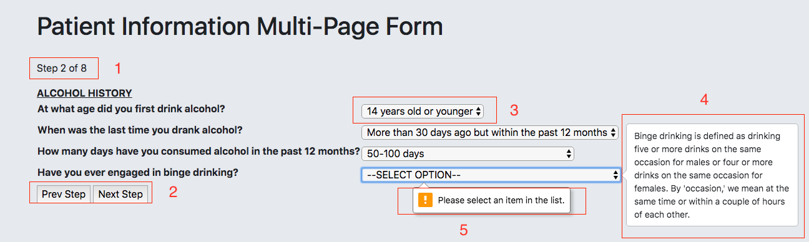
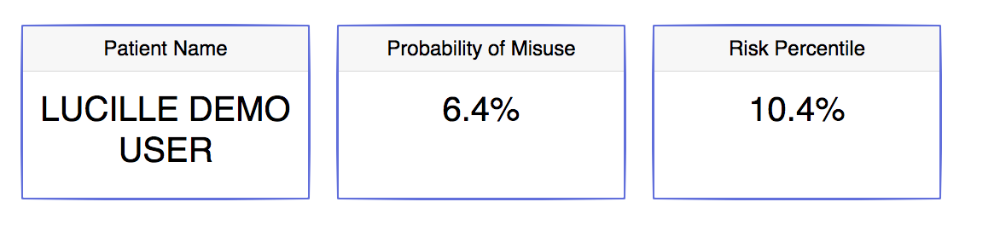
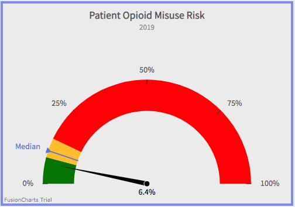

WebForm
The Opioid Misuse Risk Assessment is a multi-page webform covering eight major dimensions of a patient's background. The user experience will be consistent across each page of the webform, in that a medical professional will be presented with a set of questions, each of which is required. The majority of questions on the webform are picklists, meaning a medical professional will select one answer from a set of pre-determined values. Other question types on the webform include numeric and text fields. Below is an example of the Alcohol History section of the webform

We have denoted five items in the image above with a number, each of which corresponds to a piece of functionality in the webform:
1) This is where a medical professional can keep track of the current section number
of the form. As mentioned earlier, there are 8 sections in the form.
2) This is how a medical professional navigates through the form, which includes the ability to go back to previous steps if they wish to change earlier
information. On the last page of the webform, the Next Step button will be replaced by a Submit button.
3) This is an example of a question field of type picklist. A medical professional will need to click on the dropdown box in order to select a response for the question.
4) This is an example of help text within the webform. There are a couple of questions
across the assessment that use jargon that may be unclear to the medical professional. By simply hovering their mouse over the dropdown box, a medical professional can see if help text has been provided for the question.
5) This is an example of a very common validation rule in the webform. In order to move on to the next step, each question must be filled out, or else a validation error will fire and enforce a response. Other types of validation rules in the webform include
enforcing postive numbers for numeric fields.
Opioid Misuse Risk Report
Upon submission of the webform, the patient's opioid misuse risk report will generate and be ready for physician use. Each section of the risk report provides unique value for the physician, which they can leverage for the benefit and well-being of the patient. At the top of the risk report, the physician is provided with high-level information regarding the submission, which can be seen in the results below for a fictious user named Lucille.
In addition to the patient's name, the report presents Lucille's likelihood of misusing opioids. To give context on how the patient compares to the rest of the population, the percentile that Lucille's risk falls within is also displayed. The proper way to read Lucille's inital results is that she has a 6.4% chance of misusing opioids based on her risk assessment, and that only 10.4% of other users who have taken the risk assessment have a lower chance of misusing than Lucille. The next segment of the report aims to help a physician visualize Lucille's risk in relation to the rest of the population.

The report displays a very simple yet informative gauge that projects Lucille’s risk on a spectrum, with each color on the gauge housing a third of the population of risk scores.
The green zone contains the third of the population with the lowest risk, while on the other end the red zone captures the third of the population with the highest risk. This
visual also enables the physician to quickly compare Lucille's risk likelihood to the median. The next visual below gives insight into how Lucille’s risk score came to be,
by showing the 5 attributes from the assessment that were most important in determining Lucille’s risk.
Each of the five attributes in the graph has a corresponding bar, the length of which depends on the magnitude of the attribute's importance in determining Lucille's risk. The red bar in this graph
means the attribute (Alcohol Frequency) is driving Lucille’s likelihood to misuse up when compared to the average user, whereas green bars
mean the opposite; the attributes are driving Lucille’s likelihood to misuse down when compared to the average user. For example, the proper way for a physican to interpret the top attribute on this chart is that Lucille's age
decreases her chances of misusing opioids by 5.7% when compared to the average patient. Attributes with red bars, especially those with large magnitudes, serve as recommended talking points between physicians and
patients, especially before a determination is made on whether or not to prescribe opioids. The attributes and magnitudes of importance listed on Lucille's chart will not be the same for every patient that fills out this assessment;
results are personalized based on the model's evaluation of an individual's submission. In order for a physician to know what questions in the assessment these 5 attributes correspond to, they can refer to the following table in the report:
Each of the five attributes from the "Top 5 Attributes" chart are mapped to the "Indicator" column in this table, thus serving as a key. In addition to what questions in the assessment the attributes correspond to, the physician is presented
with Lucille's responses to the five questions, along with the quantified importance of those responses that fuels the "Top 5 Attributes" chart. If a physician is ever interested in seeing the quantified importance for EVERY attribute on the assessment,
and not just the top 5, they can always click on the button which is located right below the aforementioned table in the Opioid Misuse Risk Report
Now that you're up to speed on how the tool works, click the button below to try it yourself!